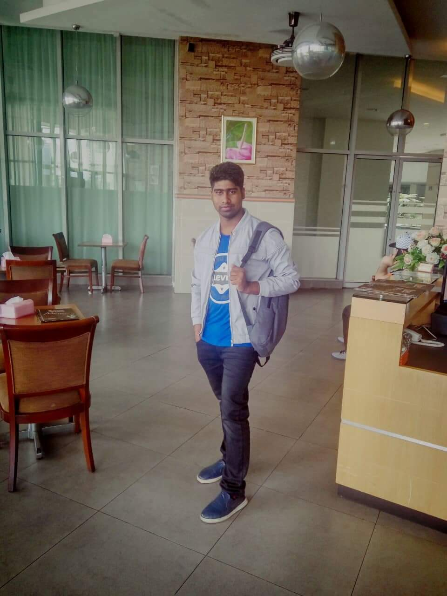

About Me
I think,i am very optimistic hard working polite and aware of my responsibilities.I never give up.Beside i am punctrual.I have confidence in me.I am ready to take any challenge. বাস্তবতার চিপায় পডে অাবেগ সব ছেড়াবেডা হয়ে গেছে । অমার ভাল লাগা!!!!!!! ওইটা জানি কাকে বলে?? ভুইলা গেছি। যাই হোক নিজেকে নিয়ে ব্যস্ত থাকতে চেষ্টার উপর ট্রাই করি। পিছনের লোক কি বলে I always don,t care... কাজের কথায় অাসি, যাই করি না কেন সব সময় সত্যের পথে থাকি অাল্লাহর কাছে সব থেকে বড় চাওয়া মা, বাবা ফ্যামেলি জন্য কিছু করতে যেন পারি। ভাল লাগে নামাজ পড়তে মানুষকে সাহায্য করতে। খারাপ অভ্যাস বলতে যা অাছে,,,, তা হলো একটু বেশি সহজ সরল তাই বাঁশ টাও বড় সাইজের খাই যাকে বলে অানলিমিটেড বাঁশ। বুঝি না বলতে কিছুই বুঝি না, কি যে বুঝি না তাও বুঝি না। বুঝেও না বুঝে থাকাটা অামার একটা ভাব,, অার এ মাঝেই অাসল মানুষগুলো কে চিনতে পারি। .. . ৷ ।।।।।।।।।সব অবস্থাতেই মহান অাল্লাহ্ উপর ভরসা করি।।।।।।।।।